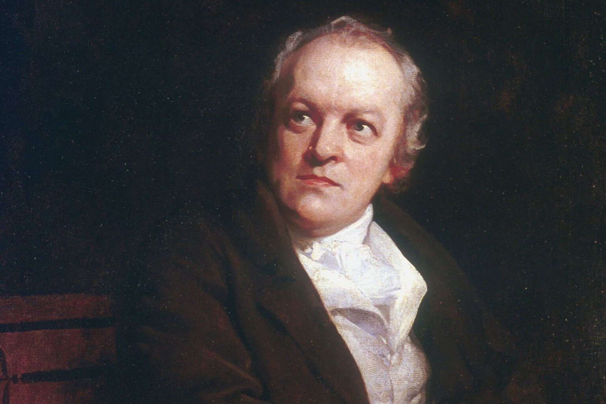
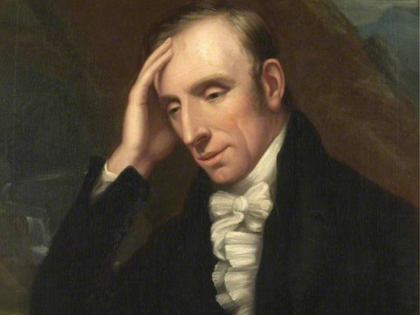
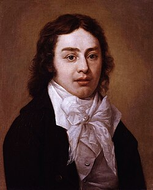
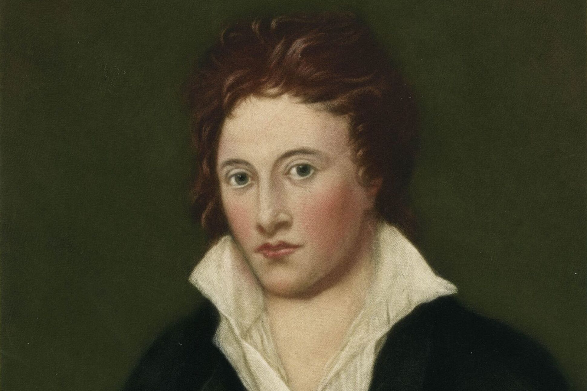
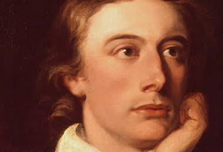

Romanticism rose like a black swan in a time of industrialisation.
Romanticism began in the late 1700's as a push against the Age of Enlightenment. It is a literary movement that supports nature, sublime and indiviudality to name a few, which oppose the ideals that are presented in Enlightenment, Industrialisation and Scientific Revolution which where all big at the time. It opposed the "new" methods and support "old" methods a lot more.
The "Big Six" of Romanticism
Despite being born in different generations, there are 6 men that their work in Romanticism earned them the title of The Big Six. The group consists of William Blake, William Wordsworth, Samuel Taylor Coleridge, Lord Byron, Percy Bysshe Shelley and John Keats. They created some incredibly popular works such as, Lines Written in Early Spring, The Chimney Sweeper and She Walks in Beauty.






The Romanticism Ideals
Awe of Nature
Romanticism values the beauty and power of nature. At the time, nature was not cared for as innovation in science and industry was valued.
Strong Emotions
Romanticism likes to look at emotions on a deep level. In the context of it's time, commonly emotions were not valued as much, especially for another human's emotions.
Imagination
Romanticism values imagination as a tool that we can use. Imagination was valued in a different way at it's time, more focusing on innovation and pushing scientific breakthroughs, instead of Romanticism's slow, emotional pace.
Individualism
Individualism
Sublime